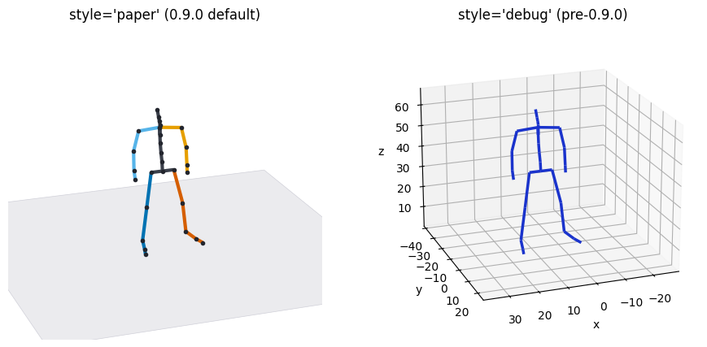

Publication Figures¶
Every bvhplot function already draws in the "paper" style — ground plane, per-chain bone colors, joint markers, no axes — so the figures you get by default are the ones you would submit. What remains is getting them out of Python in the form a venue accepts. This page is that path: vector stills, the one-figure motion summary, supplementary video, the shadowed capsule look, and where pybvh stops and Blender starts.
Stills for print¶
The static functions (plot_rest_pose, plot_frame, plot_sequence, plot_trajectory) return a matplotlib (fig, ax), so the figure is yours to save in any format matplotlib writes:
Prefer vector. A skeleton figure is lines, markers and one flat plane, so it vectorizes almost perfectly: a single pose lands around 3 KB as PDF and stays sharp at any zoom, where the same figure at 300 dpi is roughly 25 KB of pixels frozen at one size. Use PDF (or SVG, or EPS) unless the venue insists on raster.
Size the figure, not the image. matplotlib works in inches, so figsize is where you say "one column wide" and everything — line widths, marker sizes, any title — stays in proportion:
fig, ax = bvh.plot_frame(frame=120, figsize=(3.3, 3.0)) # one two-column-layout column
fig.savefig("pose.pdf", bbox_inches="tight")
When you do need raster, Style.dpi sets it and applies to every matplotlib figure the call produces:
from pybvh.bvhplot import Style
fig, ax = bvh.plot_frame(frame=120, style=Style("paper", dpi=300), figsize=(3.3, 3.0))
fig.savefig("pose.png", bbox_inches="tight") # the same figure, rasterized
filepath= writes the file for you if you do not need the figure afterwards — bvh.plot_frame(frame=120, filepath="pose.pdf") — saving at Style.dpi on the figure's own background, though without the tight crop.
The whole motion in one figure¶
plot_sequence() is the motion-paper still: poses sampled evenly across the clip, lightness encoding time (lighter = earlier), the root's path dashed on the floor.
fig, ax = bvh.plot_sequence(n_poses=8) # layout="offset" (default)
fig.savefig("motion.pdf", bbox_inches="tight")
The layout is the one real choice, and it follows the motion: "offset" draws each pose at its world position, so locomotion reads left to right across the figure; "overlay" superimposes root-centred poses, which is what in-place motion needs — legs tangle unreadably if you overlay a walk. frames=(start, stop) restricts the sampled range when only part of the clip is the point, and trajectory=False drops the floor trace.
Supplementary video¶
render() writes the clip. For material that has to play in a browser, a reviewer's PDF viewer, or an embedded notebook cell, ask for H.264 explicitly:
codec="auto" (the default) uses H.264 when a system ffmpeg is on PATH and falls back to OpenCV's MPEG-4 Part 2, which plays in desktop players like VLC but not in browsers. Naming "h264" turns that silent fallback into an error you can act on before you upload.
Two options exist to make a clip legible without narration. ghost=N trails faded copies of recent poses behind the live skeleton, and trajectory=True draws the root's path on the floor as it goes, so any single frame says where the motion has been:
And camera="turntable" orbits a full 360° over the clip's duration — the standard way to show one motion from every side:
centered="skeleton" pins the root so the orbit is the only motion in frame; without it a travelling character also walks across the shot while the camera comes round.
One orbit over a 4.4 s clip is 82° per second, too fast to look at anything. turntable_period sets the speed instead, in seconds of the video per revolution; a clip shorter than the period loops until the orbit completes, and one longer than it gets several orbits:
Anti-aliasing is on by default: the OpenCV backend draws at Style.supersample (2) times the output resolution and downsamples, and primitive sizes scale with the drawing surface, so a 4K export gets proportionally thicker lines rather than hairlines. .gif output always goes through matplotlib, which is what to use when a venue wants an animated figure rather than a video file.
The capsule look¶
backend="vedo" swaps the stick figure for shaded 3D capsules on a floor with a projected shadow, rendered offscreen — no window, no display, safe on a headless machine. It needs the viewer extra (pip install pybvh[viewer]).
image = bvh.plot_frame(frame=120, backend="vedo", resolution=(1600, 1400)) # (H, W, 3) uint8
bvh.plot_frame(frame=120, backend="vedo", filepath="pose.png") # or write it
bvh.render("capsules.mp4", backend="vedo") # same look, as video
Bone thickness is derived from the skeleton's own geometry, so rigs with fingers keep articulated hands without the renderer being told what a hand is. Style.shadow toggles the shadow; camera motion, ghosts and traces are not available on this backend — use OpenCV or matplotlib for those.
Choosing the style for the venue¶
style="paper" is the default and needs no argument. "dark" puts the same figure on a near-black ground for slides and project pages, and "debug" restores the pre-0.9.0 look — single blue skeleton, full axes and ticks — for when you need to read coordinates off a figure rather than publish it.

Any field overrides on top of a preset: Style("paper", floor=None) for a figure that will sit on a colored slide, Style("paper", floor="grid") when the reader needs a sense of scale, Style("paper", bone_width=4) for a figure that will be printed small. Chain colors are derived from the Okabe-Ito palette, so they stay distinguishable in the common forms of color blindness. They are not greyscale-safe: the two arm colors sit at the same luminance, so a black-and-white print loses left from right. If the figure will be printed without color, label the sides or pass your own Style(chain_colors=...). Multi-skeleton comparisons switch automatically to flat per-skeleton colors, the ground-truth-versus-generated convention.
Where pybvh stops¶
The vedo shadow is a hard-edged parallel projection: no soft penumbra, no self-shadowing, no global illumination. That is a deliberate boundary — pybvh renders motion capture data, and raytracing is somebody else's job. For a hero figure that needs a real render, a body mesh, or materials, write the processed clip back out and take it to a tool built for that:
Blender imports BVH natively (File ▸ Import ▸ Motion Capture (.bvh)), which keeps the round trip to one file: pybvh owns the motion, Blender owns the render.